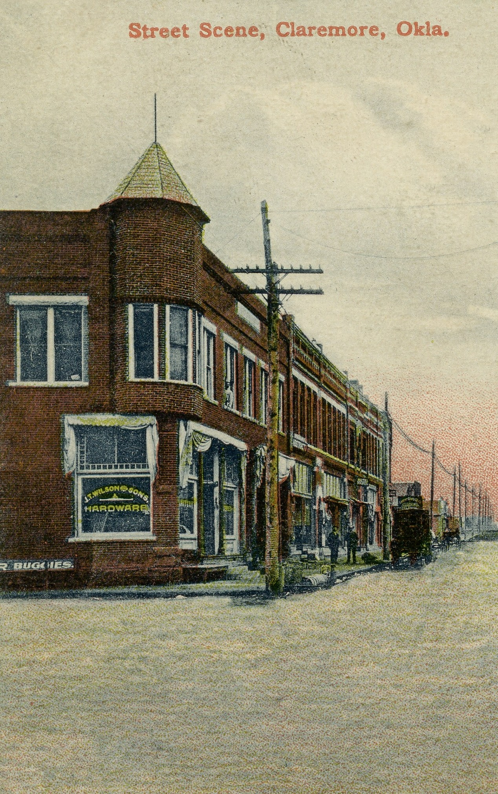

Stop 2: J.L. Wilson and Son's Hardware Store
Address: 422 W. Will Rogers Blvd, Claremore, OK
Today

Historic View

J.L. Wilson and Son's Hardware Store was a downtown business that served Claremore residents when local hardware stores were essential to everyday life, farming, construction, and town growth.
J.L. Wilson and Son's remained a family business until 1985 when it was sold.
Next Stop →